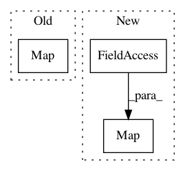

97110d0dfbb3fc2c6dfa7dfb0e44ffe00fbaf328,tests/greedy/test_units.py,,test_unit_conversions,#,28
Before Change
def test_unit_conversions():
body = starry.Secondary(
starry.Map(),
r=1.0,
m=1.0,
inc=1.0,
After Change
def test_unit_conversions():
body = starry.Secondary(
starry.Map(ydeg=1, inc=1.0, obl=1.0, angle_unit=u.radian),
r=1.0,
m=1.0,
inc=1.0,
In pattern: SUPERPATTERN
Frequency: 3
Non-data size: 3
Instances
Project Name: rodluger/starry
Commit Name: 97110d0dfbb3fc2c6dfa7dfb0e44ffe00fbaf328
Time: 2019-12-04
Author: rodluger@gmail.com
File Name: tests/greedy/test_units.py
Class Name:
Method Name: test_unit_conversions
Project Name: tensorflow/transform
Commit Name: 97507c4871dff5fb5e4bd33d2f5cf3f8bd3aceba
Time: 2020-09-01
Author: varshaan@google.com
File Name: tensorflow_transform/beam/impl.py
Class Name: _AnalyzeDatasetCommon
Method Name: expand
Project Name: tensorflow/transform
Commit Name: 96e4af6e86e93da021c29a4273dcdfaeab8fdfcf
Time: 2017-08-07
Author: tf-transform-dev@google.com
File Name: tensorflow_transform/beam/tft_beam_io/transform_fn_io.py
Class Name: WriteTransformFn
Method Name: expand